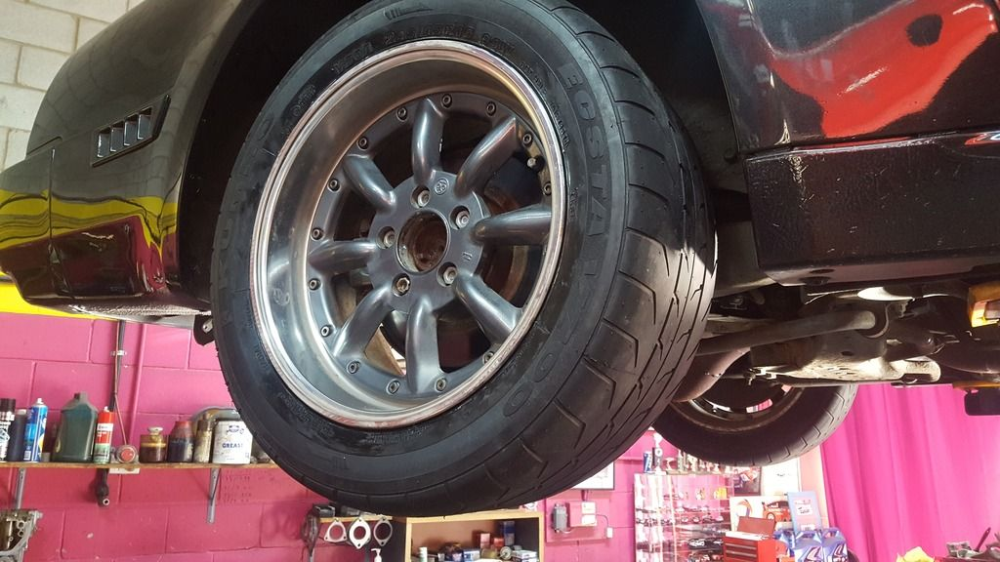

-
Howdy,
Just wondering what people have done to increase rear traction on their Z's? When boost comes on there's no traction in first, second and top end of 3rd.. I can't run slicks in Australia because its somehow illegal even though its safer.. Have coilovers all round and 255 rear tyres with camber mod on the standard rear end and viscous LSD that is tight as fuck. I have an S15 rear crossmember waiting to go in but in the mean time, any ideas? No idea how much power is going down yet. Estimate around 400hp.
CheersStraya, +61 -
There are road legal semi slicks available, get the soft compound if there is a choice. The S15 rear end will give you better grip, there is no point in looking at the present suspension if it's going to be replaced soon. Otherwise shocks and new bushes there. -
I'm running Kumho Ecsta V70A semi slick tyres, road legal in Aus. They're plenty grippy especially when warmed up and I have to be really trying to break them lose. I chose the medium compound for the balance of durability and grip however there is a soft compound available but you'll probably chew them up in 2,000kms or one day at the track!

They're pretty decent in the wet but I have scared myself a couple of times so best to avoid wet weather for the most part lol They do have a water channel down the centre but it's probably only there to get the DOT approval for road use. -
The coil overs are preventing weight transfer to rear and causing wheel spin. Softening the rear Springs or even the dampers will help some for rear end bite.

1986 300ZX Turbo…sold
1990 Skyline GT-R…new money pit
2014 Juke Nismo RS 6-speed…daily -
That's actually a good point. I'm on the softest setting on my powertrix road/track coilovers. And soft is still pretty darn hard. The firmest was bone shattering lol -
What springs? -
Ahh, mad as! I'll get a price on a set of these bad boys. I'll have to get a different set of springs for the rear I think and see what happens, the ones in there are hard as a rock so. These two things should made a fair difference I think . Thank you for the input guys.
Straya, +61
. Thank you for the input guys.
Straya, +61 -
Also random question, anyone know how I change my signature? Pretty out dated now..
Straya, +61 -
Click on your username at the top right corner and select User Settings from the drop down. The select the Account tab and click Edit Post Signature under Conversation Detail Options.Originally posted by Timbo_021 View Post'86 300ZXT GLL
'78 Datsun 280Z BP
'11 Saab 9-3 Aero XWD

Copyright © 2006–. All rights reserved. Privacy Policy